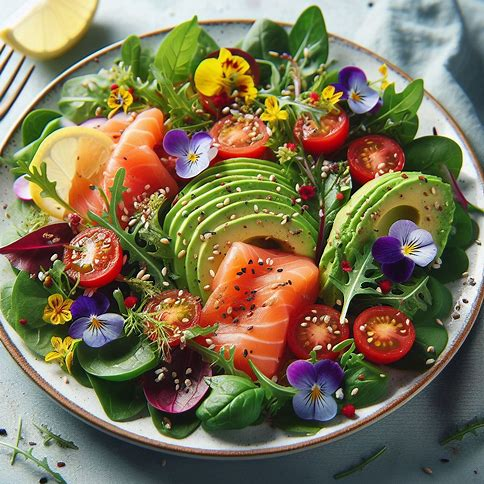
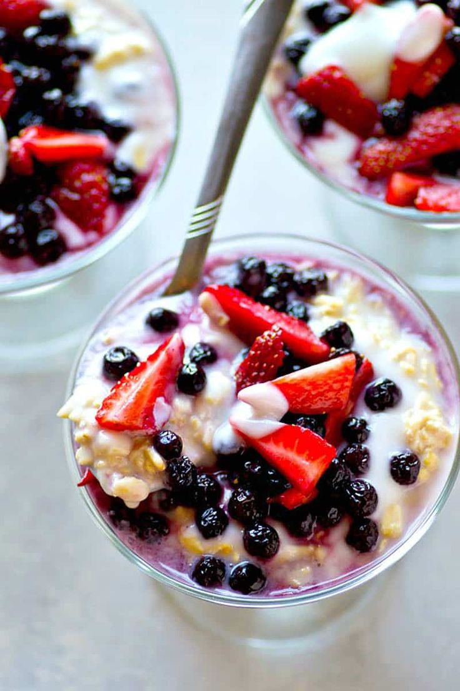

Avocado Toast
A delicious and nutritious breakfast option made with whole-grain bread topped with mashed avocado, sliced tomatoes, and a sprinkle of chia seeds. Avocado is rich in healthy fats and vitamins E and C, which are essential for skin health.
 Vegetarian
Vegetarian
Salmon and Spinach Salad
A vibrant salad featuring grilled salmon fillet served on a bed of fresh spinach leaves, topped with sliced strawberries, walnuts, and a balsamic vinaigrette dressing. Salmon is rich in omega-3 fatty acids, which help maintain skin hydration and elasticity.
 Non-VegetarianGreek Yogurt with Berries
A satisfying and creamy snack made with Greek yogurt topped with mixed berries and a drizzle of honey. Greek yogurt is high in protein and probiotics, which promote gut health and can lead to clearer skin.
 Vegetarian